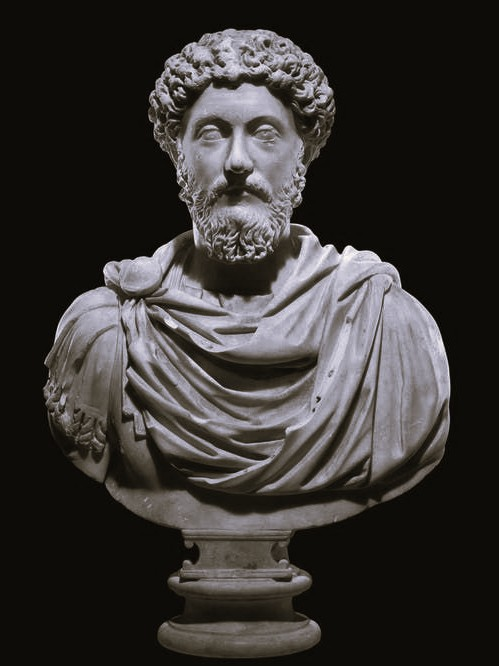

Who Was Marcus Aurelius?
Marcus Aurelius, in full Marcus Aurelius Antoninus, was a Roman emperor who reigned from 161 to 180 CE and one of the most widely read Stoic philosophers in history. He is remembered as the last of the Five Good Emperors, a period later historians regarded as a high point of Roman governance, and as the author of Meditations, a private philosophical journal that remains one of the most enduringly popular works of ancient philosophy.
Marcus Aurelius is especially associated with demonstrating that Stoic philosophy could be lived out not in quiet withdrawal from the world but under the immense practical pressure of ruling an empire, commanding armies on hostile frontiers, and enduring repeated personal loss, all while striving to remain just, self-disciplined, and clear-minded. Rather than developing new Stoic doctrine, his writing applies the existing Stoic tradition to the concrete difficulties of power, duty, mortality, and daily self-governance.
Educated from childhood in rhetoric and philosophy and eventually adopted into the imperial succession by the emperor Antoninus Pius, Marcus Aurelius spent much of his reign not in the comfort of Rome but on military campaign along the empire's northern frontier, defending against invading tribes during the prolonged Marcomannic Wars while continuing to record private philosophical reflections that would only become known to a wider public long after his death.
Because Meditations was never intended for publication and survives as a personal record of self-address rather than a formal treatise, scholars continue to debate exactly how to read and organize its content within the broader history of Stoic philosophy. Its importance nonetheless remains immense, since it offers one of the only surviving first-person accounts of a working Stoic practitioner attempting, in real time, to apply philosophy to an extraordinarily demanding life.
Marcus Aurelius: Quick Facts
- Name — Marcus Aurelius Antoninus
- Period — 121–180 CE
- Born in — Rome, Roman Empire
- Reign — Roman emperor, 161–180 CE
- Associated with — Stoicism and the philosophy of virtue
- Known for — Meditations and his reign as the last of the Five Good Emperors
- Major work — Meditations, a private philosophical journal
- Predecessor — Adopted successor of Antoninus Pius
- Major conflicts — The Marcomannic Wars on the Roman frontier
- Successor — His son Commodus, whose reign is often seen as ending this golden period
Marcus Aurelius and the Age of the Five Good Emperors

Marcus Aurelius reigned during a period later Roman historians termed the era of the Five Good Emperors, spanning roughly from the reign of Nerva through his own, during which imperial succession was determined primarily through the adoption of a capable and carefully prepared successor rather than through direct hereditary right, a system many later commentators credited with producing an unusually stable and competently governed period of Roman history.
Philosophically, Marcus Aurelius belonged to the mature Roman phase of Stoicism, a school originally founded in Hellenistic Athens by Zeno of Citium that had, by the time of the Roman Empire, developed into a widely respected and practically oriented ethical tradition, associated with earlier Roman Stoic writers including Seneca and the former slave turned philosopher Epictetus, whose teachings profoundly shaped Marcus Aurelius's own thinking.
Marcus Aurelius's reign coincided with significant external and internal pressure on the Roman Empire, including sustained military conflict along the Danube frontier and the outbreak of a devastating pandemic, later known as the Antonine Plague, both of which placed extraordinary practical demands on his leadership and provided the immediate historical backdrop against which much of Meditations was composed.
In the intellectual and political environment associated with Marcus Aurelius, philosophical reflection therefore combined directly with the practical demands of empire, treating Stoic discipline not as an abstract academic pursuit but as a necessary daily practice for governing wisely and enduring hardship without succumbing to fear, anger, or despair.
Who Was Marcus Aurelius and What Did He Do?
Marcus Aurelius was born in Rome in 121 CE into a family of considerable social standing, and he attracted the favorable attention of the emperor Hadrian from an early age, receiving an unusually rigorous education in rhetoric, law, and philosophy under a series of distinguished tutors, including the Stoic teacher Junius Rusticus, who is credited with introducing him directly to the writings of Epictetus.
As part of Hadrian's careful arrangement for imperial succession, Marcus Aurelius was adopted by Antoninus Pius, who himself succeeded Hadrian as emperor, and Marcus Aurelius spent the following decades being carefully groomed for eventual rule while continuing his philosophical studies and gradually assuming greater administrative and public responsibility.
Upon Antoninus Pius's death in 161 CE, Marcus Aurelius became emperor and initially shared power with his adoptive brother Lucius Verus in an unprecedented arrangement of joint rule, an arrangement that continued until Verus's death in 169 CE, after which Marcus Aurelius governed alone for the remainder of his reign.
Much of Marcus Aurelius's reign was consumed by sustained military campaigning along the Roman frontier during the Marcomannic Wars, prolonged conflicts against Germanic and other tribes threatening the empire's northern borders, campaigns that kept him away from Rome for extended periods and during which much of Meditations is believed to have been composed.
Marcus Aurelius died in 180 CE while still on campaign near the Roman frontier, likely in the vicinity of Vindobona or Sirmium, probably weakened by illness connected to the ongoing Antonine Plague, and was succeeded by his son Commodus, whose subsequent reign is often regarded by historians as marking the end of the stable period associated with the Five Good Emperors.
What Did Marcus Aurelius Believe?
Marcus Aurelius's philosophy is grounded firmly in the tradition of Stoicism, which holds that a genuinely good and flourishing human life depends not on external circumstances such as wealth, reputation, or physical comfort, but on the cultivation of virtue and the exercise of right reason in every situation one encounters.
At the center of this philosophy lies the conviction that human beings should focus their effort entirely on what lies within their own control, namely their own judgments, intentions, and responses, while accepting with equanimity whatever lies outside their control, including the actions of others, the events of nature, and even the timing and manner of their own death.
Marcus Aurelius consistently emphasizes the transience of all worldly things, including fame, power, and life itself, using this recognition not to induce despair but to cultivate a steady, undistracted focus on acting justly and rationally in the present moment, treating each action as an opportunity to exercise virtue regardless of ultimate outcome.
His writing also reflects a strong Stoic conviction that human beings are fundamentally social and rational creatures, bound together as parts of a single interconnected cosmic order, a belief that grounded his insistence on justice, patience, and goodwill even toward those who acted wrongly or caused him personal difficulty.
Scholars of ancient philosophy continue to debate how much of Marcus Aurelius's thought represents original philosophical contribution as opposed to a personal application of doctrines already developed by earlier Stoics such as Epictetus, Chrysippus, and Zeno, but his writing is consistently recognized as one of the most vivid and practically compelling records of Stoic philosophy actually being lived rather than merely argued.
Meditations: Marcus Aurelius's Private Philosophical Journal

Meditations is Marcus Aurelius's only surviving work and one of the most widely read texts in the entire history of philosophy, composed not as a formal treatise intended for publication but as a private collection of philosophical notes and reminders Marcus Aurelius wrote to himself, likely during quiet moments amid his military campaigns.
The work is organized into twelve books, though this structure appears to reflect later editorial arrangement rather than a deliberate literary plan on Marcus Aurelius's part, and its content consists largely of short, often disconnected reflections, exhortations, and reminders addressed directly to himself, urging patience, humility, discipline, and steady attention to virtue.
Because Meditations was written purely for personal use, its tone differs markedly from more formally argued philosophical works, offering readers an unusually intimate and unguarded window into the actual daily struggles of a practicing Stoic, including moments of self-criticism, frustration, and renewed resolve that would likely have been edited out of a work intended for a public audience.
The text survived antiquity through an uncertain and only partially documented transmission history, only becoming widely known in the modern world following its first printed editions in the sixteenth century, after which it steadily grew into one of the most continuously read and translated works of ancient philosophy, admired equally by professional philosophers and general readers seeking practical guidance for living well.
The Dichotomy of Control in Marcus Aurelius's Philosophy
The dichotomy of control, a concept most explicitly formulated by Epictetus but thoroughly absorbed and repeatedly applied throughout Marcus Aurelius's own writing, holds that everything a person encounters can be divided into what lies within their own power and what does not.
Within one's own power, in this framework, lie one's own judgments, intentions, desires, and responses to events, while outside one's power lie external circumstances such as other people's actions, one's reputation, physical health, and the ultimate outcomes of one's efforts, none of which can be guaranteed no matter how skillfully or virtuously a person acts.
Marcus Aurelius repeatedly applies this principle throughout Meditations to the specific pressures of his own life, reminding himself that the insults, betrayals, or failures of others cannot themselves disturb his peace of mind unless he allows his own judgment to be disturbed by them, since only his own reactions and choices, not external events themselves, remain genuinely within his control.
This principle functions throughout Marcus Aurelius's philosophy as a practical technique for maintaining composure and rational clarity under intense external pressure, including military crisis, political betrayal, and personal grief, allowing him to direct his energy entirely toward right action and virtuous judgment rather than toward outcomes that ultimately remain beyond his control.
The View from Above: Marcus Aurelius's Cosmic Perspective
Marcus Aurelius makes frequent use of a distinctive meditative technique sometimes called the "view from above," in which he imaginatively pictures human affairs, including his own life and concerns, from an extraordinarily distant, almost cosmic vantage point, viewing the whole of human history and activity as though observed from a great height.
This technique served Marcus Aurelius as a deliberate method for gaining perspective on troubles that might otherwise seem overwhelming, allowing the vast scale of time and the immense number of other human lives, empires, and concerns to relativize his own immediate anxieties and place them within a much larger and more impersonal cosmic context.
Closely related to this technique is Marcus Aurelius's frequent reflection on the impermanence of fame, power, and even entire civilizations, repeatedly noting how quickly great figures and empires of the past have been forgotten, a reflection he uses not to induce nihilism but to encourage sober humility about his own achievements and status as emperor.
This cosmic perspective connects directly to the broader Stoic conviction that human beings are small but meaningfully integrated parts of a vast, rationally ordered universe, allowing Marcus Aurelius to combine a clear-eyed sense of his own insignificance within the cosmos with a simultaneous conviction that his own local, everyday actions and choices retained genuine moral significance.
Memento Mori: Marcus Aurelius on Death and Mortality
Memento mori, meaning "remember that you will die," names a recurring theme throughout Meditations, in which Marcus Aurelius repeatedly directs his own attention toward the certainty and unpredictability of death as a tool for clarifying what genuinely matters in daily life.
Rather than treating death as a subject to be avoided or feared, Marcus Aurelius consistently frames mortality as a natural and entirely ordinary process, comparable to other transformations occurring constantly throughout nature, and he repeatedly reminds himself that resisting or dreading this natural process only compounds unnecessary suffering without changing its inevitability.
This sustained attention to mortality functions throughout Marcus Aurelius's philosophy as a motivating discipline rather than a source of despair, since recognizing the shortness and uncertainty of life repeatedly prompts him to renew his commitment to acting virtuously and purposefully in the present moment rather than postponing genuine ethical effort to some imagined future.
Marcus Aurelius's reflections on death also extend to broader meditations on the impermanence of reputation and legacy, repeatedly observing that even the most celebrated historical figures are eventually forgotten, a recognition he uses to detach his own sense of purpose from the pursuit of lasting fame and to root it instead in the immediate, present exercise of virtue.
Marcus Aurelius and the Stoic Cardinal Virtues
Marcus Aurelius's ethical philosophy centers on the four classical cardinal virtues inherited from the broader Stoic and earlier Greek philosophical tradition: wisdom, justice, courage, and temperance, or self-discipline, each treated as essential and mutually reinforcing components of a genuinely virtuous life.
Wisdom, in this framework, involves the capacity to judge situations accurately and to distinguish clearly between what is genuinely good, genuinely bad, and merely indifferent, while justice involves treating others fairly and fulfilling one's social duties and responsibilities with integrity, a virtue Marcus Aurelius applied directly to his responsibilities as emperor.
Courage for Marcus Aurelius meant not merely physical bravery in battle but the broader capacity to face hardship, uncertainty, and death itself without succumbing to fear or despair, while temperance involved maintaining self-discipline over one's own desires and impulses, ensuring that momentary passions did not override considered, rational judgment.
Throughout Meditations, Marcus Aurelius repeatedly returns to these four virtues as practical touchstones for evaluating his own conduct, using them not as abstract categories for philosophical debate but as concrete, everyday standards against which he measured his actions as a ruler, military commander, and private individual.
Marcus Aurelius as Philosopher-Emperor
Marcus Aurelius is frequently described as one of history's clearest real-world approximations of Plato's ideal of the philosopher-king, a ruler who governs not merely through inherited authority or political skill but through sustained ethical reflection and philosophical self-discipline.
As emperor, Marcus Aurelius consistently framed his own authority as a form of duty and service rather than personal privilege, repeatedly reminding himself in Meditations of his responsibility to govern justly, to treat even difficult subordinates and rivals with patience, and to remain accessible and accountable rather than isolated by the trappings of imperial power.
This philosophical approach to leadership did not exempt Marcus Aurelius from the genuine and often brutal demands of imperial rule, including sustained military conflict and difficult political decisions, and his surviving writing reflects an ongoing effort to reconcile the practical necessities of power with his deeper philosophical commitment to justice and restraint.
Later historians and readers have continued to debate how successfully Marcus Aurelius's philosophical ideals translated into his actual conduct as ruler, particularly regarding questions such as his treatment of early Christians and his eventual decision to name his own son Commodus as successor rather than continuing the earlier practice of adoptive succession, but his sustained personal effort to govern according to Stoic principle remains a distinctive and widely admired feature of his historical reputation.
The Marcomannic Wars and Marcus Aurelius's Military Leadership
The Marcomannic Wars, a prolonged series of military conflicts against Germanic tribes and other groups along the Roman Empire's Danube frontier, occupied a substantial portion of Marcus Aurelius's reign, requiring extended personal presence on campaign far from the comforts and administrative center of Rome.
These wars placed enormous strain on Roman military and economic resources, compounded by the simultaneous outbreak of the Antonine Plague, and required Marcus Aurelius to personally direct extended military operations despite his own preference, expressed at several points in Meditations, for a life of quieter philosophical reflection.
Much of Meditations is believed to have been composed during these very campaigns, and many of its passages reflect direct engagement with the specific pressures of sustained military command, including reflections on courage in the face of danger, patience with subordinates, and the proper Stoic response to the violence and loss inherent in warfare.
Marcus Aurelius's sustained personal engagement with these campaigns, despite considerable philosophical ambivalence about the demands of rule and war, illustrates a defining tension throughout his life between his deep attraction to philosophical withdrawal and his equally deep sense of duty to the practical responsibilities of imperial leadership.
The Antonine Plague During Marcus Aurelius's Reign
The Antonine Plague, a devastating pandemic that spread throughout the Roman Empire during Marcus Aurelius's reign, likely brought back by soldiers returning from campaigns in the eastern provinces, caused significant mortality and disruption across the empire during the very years he was also managing sustained military conflict on the northern frontier.
The precise nature of the disease responsible for the Antonine Plague remains a subject of ongoing scholarly and medical- historical debate, with modern researchers proposing possibilities including smallpox or measles based on the surviving ancient accounts of its symptoms and spread.
Although Meditations does not extensively document the practical administrative response to the plague in detail, the compounding pressures of pandemic and prolonged war during this period form an important part of the historical backdrop against which Marcus Aurelius's repeated reflections on mortality, impermanence, and the proper response to suffering should be understood.
Modern historians frequently cite the combined impact of the Antonine Plague and the Marcomannic Wars as significant contributing factors in the broader strain placed on Roman imperial stability during this period, strain that would continue to shape the empire's trajectory in the decades following Marcus Aurelius's own death.
Marcus Aurelius, Commodus, and the End of the Golden Age
Marcus Aurelius's decision to name his biological son Commodus as his successor marked a significant departure from the practice of adoptive succession that had characterized the preceding decades of the Five Good Emperors, in which each emperor had selected and carefully prepared a capable successor from outside his immediate family line.
Commodus's subsequent reign, beginning after Marcus Aurelius's death in 180 CE, is widely regarded by ancient and modern historians alike as a marked decline from his father's governance, characterized by growing instability, extravagance, and increasingly erratic and autocratic rule that many historians treat as symbolically marking the end of the stable period associated with the Five Good Emperors.
This contrast between Marcus Aurelius's disciplined, duty- oriented Stoic philosophy and his son's very different style of rule has become a recurring theme in later historical and popular reflection on his legacy, often framed as an illustration of the limits of philosophical wisdom in guaranteeing wise succession or lasting political stability.
Scholars continue to debate why Marcus Aurelius chose hereditary succession despite his own demonstrated commitment to duty and careful judgment, with explanations ranging from practical political necessity to genuine paternal attachment, though the decision remains one of the most closely examined aspects of his historical legacy.
Marcus Aurelius and Stoicism
Stoicism was the philosophical tradition that most deeply shaped Marcus Aurelius. Founded in ancient Greece and later developed by Roman thinkers, Stoicism taught that philosophy was not merely an academic subject but a way of life. Its purpose was to help human beings achieve wisdom and live well through the disciplined use of reason and the cultivation of virtue.
Marcus was influenced by earlier Stoic thinkers and especially by the teachings associated with Epictetus. In the Meditations, however, Marcus does not simply repeat Stoic doctrines in a systematic form. He uses philosophical ideas as reminders directed at himself, often returning to the same principles because living according to them required continual practice.
Central Stoic ideas appear throughout his writings: virtue is more important than external success, reason should guide judgment, human beings belong to a larger natural order, and every person has duties toward others. Marcus also emphasizes the need to distinguish between events themselves and the judgments through which people respond to those events.
Marcus Aurelius is therefore best understood as a Stoic practitioner. His lasting philosophical importance comes partly from showing what it meant to attempt to live according to Stoic principles while facing illness, war, political responsibility, personal loss, and the immense pressures of ruling the Roman Empire.
Marcus Aurelius's Stoic Teachers and Influences
Epictetus, a former slave who became one of the most influential Stoic teachers of the Roman period, exercised profound influence over Marcus Aurelius's philosophical formation, despite the two never meeting directly, since Epictetus had already died before Marcus Aurelius reached adulthood.
Marcus Aurelius encountered Epictetus's teaching primarily through the compiled notes of Epictetus's own students, and Meditations contains numerous direct references and clear conceptual debts to Epictetus's teaching, particularly regarding the dichotomy of control and the emphasis on maintaining a disciplined, well-ordered inner judgment regardless of external circumstance.
Marcus Aurelius's tutor Junius Rusticus played a direct and personally significant role in introducing him to this Stoic material, and Marcus Aurelius explicitly credits Rusticus, along with several other named teachers and family members, in the opening book of Meditations, which catalogs the specific virtues and lessons he attributed to each influential figure in his life.
Beyond Epictetus, Marcus Aurelius's writing also reflects the broader influence of earlier Stoic philosophy developed by Zeno of Citium, Chrysippus, and the Roman Stoic Seneca, situating Marcus Aurelius within a continuous, centuries-long philosophical tradition that he inherited, applied, and transmitted to subsequent generations of readers.
What Did Marcus Aurelius Mean by the Ruling Faculty?
An important idea in Stoic philosophy is the ruling faculty, often connected with the Greek term hegemonikon. This refers to the governing rational capacity of the mind through which a person evaluates impressions, forms judgments, makes choices, and directs action. For Marcus Aurelius, protecting the integrity of this rational faculty was central to living a good life.
External events constantly produce impressions upon the mind. A person may encounter pain, insult, loss, danger, praise, or disappointment, but Marcus emphasizes the importance of examining the judgment made about such experiences. The mind should not immediately surrender to every appearance or emotional reaction but should consider whether its interpretation is reasonable and justified.
This does not mean that Marcus believed people could control every event or feeling through simple willpower. The Stoic distinction is more philosophical: external events arise within a larger causal order, while a rational person remains responsible for the judgments and choices through which they respond to what happens.
The ruling faculty therefore represents the inner capacity through which moral character is formed. Marcus repeatedly urges himself not to allow anger, fear, vanity, or the opinions of others to corrupt his judgment. Philosophy, in this sense, becomes a continual discipline of preserving reason and directing one's actions toward virtue.
Why Did Marcus Aurelius Believe Virtue Was the Highest Good?
The belief that virtue is the only true good stands at the center of Marcus Aurelius's Stoic philosophy. For the Stoics, a person's life is made genuinely good not by wealth, power, health, fame, or pleasure, but by the condition of their rational and moral character. Wisdom, justice, courage, and self-control are therefore fundamentally more important than external circumstances.
This position led the Stoics to describe many ordinary things as indifferents in relation to moral goodness and human flourishing. Health and wealth may be naturally preferable to illness and poverty, but possessing them does not automatically make someone a good person. Likewise, losing them does not by itself destroy a person's moral character.
Marcus repeatedly uses this principle to challenge the importance people often attach to reputation and political success. Even an emperor can be morally corrupted by vanity, injustice, or uncontrolled desire. Conversely, a person facing hardship can preserve their moral integrity by continuing to act with reason, courage, and justice.
Virtue was therefore not an abstract ideal separated from daily life. It was expressed through particular actions and judgments. Marcus asks himself whether he is acting justly toward others, responding to difficulty with courage, controlling destructive impulses, and using his rational capacities well. For him, the quality of one's character ultimately mattered more than the changing circumstances of fortune.
Marcus Aurelius on Justice and Duty to Others
Justice occupies a central place in Marcus Aurelius's philosophy. Stoicism did not teach that wisdom meant withdrawing completely from other people in order to achieve private tranquility. Human beings are naturally social as well as rational, and a person must therefore consider how their actions affect the larger community to which they belong.
Marcus frequently describes human beings as parts of a greater whole. This reflects the Stoic idea of cosmopolitanism, according to which all rational human beings can be understood as fellow citizens of a universal community. Moral concern should not be limited entirely to one's own interests, family, social status, or political community.
His understanding of duty was particularly significant because Marcus was both a philosopher and a Roman emperor. Political power did not, in his view, remove the obligation to act justly. Instead, power created further responsibilities. He repeatedly reminds himself that he should serve the common good rather than become corrupted by anger, vanity, cruelty, or the desire for personal glory.
Marcus also believed that the wrongdoing of others should not destroy one's own commitment to justice. People may act ignorantly or badly, but responding with hatred can damage the social bonds human beings naturally share. The Stoic response is therefore to oppose injustice when necessary while attempting to preserve one's own rationality, fairness, and concern for the human community.
What Did Marcus Aurelius Believe About Death?
Death is one of the most persistent themes in the Meditations. Marcus Aurelius repeatedly reminds himself that every human life is temporary, that generations disappear, and that even the greatest reputations eventually fade. These reflections are not intended simply to produce pessimism but to free the mind from an excessive fear of mortality.
From a Stoic perspective, death is a natural event rather than something that is automatically morally evil. A person does not become virtuous or vicious merely because they live longer or die sooner. What matters morally is how they use the time available to them and whether they act with wisdom, justice, courage, and self-control.
Marcus also connects death with his broader understanding of nature and change. Everything within the world undergoes transformation, and human beings are part of this larger process. The recognition of impermanence should therefore encourage a person to accept the natural limits of life rather than waste their present existence in continual anxiety about what cannot be avoided forever.
Reflection on death consequently has an ethical purpose in Marcus's philosophy. Awareness of mortality should make a person less obsessed with fame, wealth, and trivial conflicts and more attentive to the present moment. Since life is limited, the important question becomes not how long one will live, but whether one is using the present opportunity to live and act well.
Marcus Aurelius in Popular Culture and the Gladiator Films
Marcus Aurelius has become one of the more widely recognized Roman emperors in modern popular culture, due substantially to his prominent portrayal in the film Gladiator, released in 2000, and its 2024 sequel, both of which depict a version of his final days and the transition of power following his death.
The historical accuracy of these film portrayals varies considerably from the documented historical record; the films depict Marcus Aurelius expressing a wish to restore the Roman Republic and to pass power to a chosen general rather than to his son Commodus, a plot device without clear support in surviving historical sources, which instead indicate that Commodus had already been named co-emperor and heir well before his father's death.
Despite these dramatic liberties, the films' popularity significantly increased general public interest in Marcus Aurelius and in Stoic philosophy more broadly, contributing to a substantial contemporary revival of interest in Meditations and in Stoicism as a practical philosophy for modern life.
This renewed popular interest has also coincided with a broader contemporary movement often referred to as modern Stoicism, which draws heavily on Marcus Aurelius's writing, along with that of Epictetus and Seneca, presenting Stoic principles as practical resources for resilience, self-discipline, and emotional regulation in modern daily life.
Marcus Aurelius's Most Widely Cited Philosophical Reflections
Certain passages from Meditations have become especially widely cited and circulated in modern discussions of Stoicism, frequently quoted for their concise and practically applicable expression of core Stoic principles regarding perception, judgment, and self-command.
Among the themes most frequently drawn from Marcus Aurelius's writing are his reflections on the power of perception to shape experience, his repeated insistence that obstacles and difficulties can themselves become opportunities for the exercise of virtue, and his consistent emphasis on focusing effort entirely on the present moment rather than on regret over the past or anxiety about the future.
These recurring themes have made Marcus Aurelius's writing particularly attractive to modern readers seeking practical philosophical guidance, since the concise, aphoristic style of Meditations lends itself readily to being extracted and applied as standalone reflections, even though each individual passage originally formed part of Marcus Aurelius's larger, ongoing private dialogue with himself.
Readers exploring Marcus Aurelius's philosophy are generally encouraged to engage with Meditations as a sustained and evolving personal record rather than a collection of isolated maxims, since much of the work's distinctive value lies in observing how Marcus Aurelius returns repeatedly to the same core principles across many different specific situations and moods.
Marcus Aurelius: Main Philosophical Ideas
Because Marcus Aurelius expressed his philosophy through a private, ongoing journal rather than a formal systematic treatise, his central ideas are often summarized under a small number of key themes recurring throughout Meditations.
The Dichotomy of Control
Marcus Aurelius consistently distinguishes between what lies within a person's own judgment and control and what does not, directing effort entirely toward the former.
Virtue as the Only True Good
Following core Stoic doctrine, Marcus Aurelius holds that genuine human flourishing depends on virtue rather than external circumstances such as wealth, power, or reputation.
Acceptance of Mortality and Impermanence
Repeated reflection on death and the transience of fame and power serves, in Marcus Aurelius's philosophy, to sharpen rather than diminish present ethical focus.
Duty and Service in Leadership
Marcus Aurelius consistently frames his imperial authority as a form of duty and service rather than personal privilege.
Philosophy as Daily Practice
Rather than treating philosophy as abstract theory, Marcus Aurelius used sustained private reflection as an ongoing, practical discipline for governing his own judgment and conduct.
What Do We Actually Know About Marcus Aurelius?
Marcus Aurelius is unusually well documented for an ancient historical figure, thanks to extensive Roman historical sources alongside his own surviving personal writing; the more significant debates concern the interpretation of his philosophy and the accuracy of later dramatizations rather than uncertainty about the basic outline of his life.
Relatively Well-Attested
- Marcus Aurelius reigned as Roman emperor from 161 to 180 CE.
- He was adopted into the imperial succession by Antoninus Pius.
- He led sustained military campaigns during the Marcomannic Wars.
- He authored Meditations, likely composed largely during military campaigns.
- He was succeeded by his son Commodus following his death in 180 CE.
Widely Discussed Interpretive Themes
- His application of the Stoic dichotomy of control to the pressures of imperial rule.
- His reflections on mortality, impermanence, and the "view from above."
- His self-understanding as a duty-bound philosopher-ruler.
Areas of Ongoing Scholarly Debate
- How consistently Marcus Aurelius's actual governance matched the philosophical ideals expressed in Meditations.
- His treatment of early Christian communities during his reign.
- The exact circumstances and precise cause of his death near the Roman frontier.
- The considerable historical inaccuracies in popular film portrayals of his final days and succession.
Why Is Marcus Aurelius Important in Philosophy?
Marcus Aurelius is important because he offers one of the only surviving first-person, unguarded accounts of Stoic philosophy actually being practiced under intense real-world pressure, rather than merely argued or taught in the abstract.
His philosophical legacy raises a fundamental question that remains central to ethics and political philosophy: Can genuine virtue and inner freedom be maintained even while holding immense worldly power and facing sustained external hardship, and if so, what daily practices does such a life actually require?
This question has continued to shape discussions of Stoic and virtue ethics, leadership, and resilience, as later readers examined how Marcus Aurelius's private reflections might apply to the pressures of modern professional, political, and personal life.
Marcus Aurelius's importance therefore does not depend on resolving every scholarly debate about how consistently he lived up to his own philosophical ideals. His significance comes from the enduring practical example his writing offers of sustained, honest philosophical self-examination conducted under extraordinary pressure, a legacy that continues to shape modern Stoicism and popular philosophy today.
Marcus Aurelius Explained Simply
Marcus Aurelius was a Roman emperor and Stoic philosopher whose private journal, Meditations, records his ongoing effort to live virtuously, accept what he could not control, and remain disciplined and just despite the pressures of ruling an empire.
Instead of writing formal philosophical arguments for others, Marcus Aurelius's surviving work consists of personal reminders to himself, applying Stoic principles including the dichotomy of control, the cardinal virtues, and reflection on mortality to the concrete challenges of leadership, war, and daily life.
His practical application of Stoicism to the demands of power and hardship remains among the most influential contributions of ancient philosophy to the wider history of ethics, leadership, and modern personal-development thought.
- Philosopher/Emperor: Marcus Aurelius
- Period: 121–180 CE
- Tradition: Stoicism
- Major work: Meditations
- Central concern: Living virtuously under the pressures of power and hardship
- Associated principle: The dichotomy of control
- Reign: Roman emperor, 161–180 CE
- Successor: His son, Commodus
A Principle Central to Marcus Aurelius's Philosophy
“You have power over your mind, not outside events.”
Frequently Asked Questions About Marcus Aurelius
Who was Marcus Aurelius?
Marcus Aurelius was a Roman emperor who reigned from 161 to 180 CE and a Stoic philosopher whose private journal, Meditations, remains one of the most widely read works of Stoic philosophy.
What is Marcus Aurelius famous for?
Marcus Aurelius is famous for his private philosophical journal Meditations, his reign as the last of the Five Good Emperors, and his sustained military leadership during the Marcomannic Wars.
What is Meditations by Marcus Aurelius about?
Meditations is a private philosophical journal Marcus Aurelius wrote to himself, recording Stoic reflections on virtue, mortality, self-discipline, and how to remain calm and just amid the pressures of rule and the uncertainties of life.
What is the dichotomy of control?
The dichotomy of control is the Stoic principle, thoroughly applied throughout Marcus Aurelius's writing, that a person should focus entirely on what lies within their own judgment and choices while accepting with equanimity everything that lies outside their control.
Was Marcus Aurelius a good emperor?
Marcus Aurelius is generally regarded by historians as one of the more capable and just Roman emperors, remembered as the last of the Five Good Emperors, though his choice to name his son Commodus as successor is often cited as a significant lapse in judgment.
How did Marcus Aurelius die?
Marcus Aurelius died in 180 CE while on campaign on the Roman frontier, likely near Vindobona or Sirmium, probably from illness connected to the Antonine Plague that had spread through the empire during his reign.
What is the relationship between Marcus Aurelius and Commodus?
Commodus was Marcus Aurelius's son and successor, whose reign following his father's death is widely regarded by historians as marking a decline from the stability associated with Marcus Aurelius's own governance.
How accurate is the movie Gladiator's portrayal of Marcus Aurelius?
The Gladiator films take significant dramatic liberties, including depicting Marcus Aurelius wishing to restore the Roman Republic and pass power outside his family, a plot point not supported by historical sources, which indicate Commodus had already been named co-emperor before his father's death.
Who influenced Marcus Aurelius's philosophy?
Marcus Aurelius was profoundly influenced by the Stoic teacher Epictetus, encountered through his tutor Junius Rusticus, as well as by earlier Stoic philosophers including Zeno of Citium, Chrysippus, and Seneca.
Why is Marcus Aurelius important today?
Marcus Aurelius remains important because Meditations continues to offer practical Stoic guidance for resilience, self- discipline, and emotional regulation, contributing to a significant modern revival of interest in Stoic philosophy.
Related Ancient Philosophers
Marcus Aurelius belongs to the wider tradition of Stoic and ancient Greco-Roman philosophy. Explore philosophers who shaped and responded to many of the same ethical questions.
Philosophy Branches Connected to Marcus Aurelius
Marcus Aurelius's philosophical legacy is particularly important for ethics, where philosophers investigate virtue and the good life, and for political philosophy, which examines the nature of just and responsible leadership.
Why Marcus Aurelius Still Matters
Marcus Aurelius did not set out to found a new philosophical school or produce a work for public acclaim, yet his private notes to himself became one of the most enduringly read and practically influential works in the entire history of philosophy.
Yet the questions associated with Marcus Aurelius remain fundamental to philosophy: Can virtue be maintained under extraordinary pressure and power? What genuinely lies within our control? How should the certainty of death shape the way we choose to live each day?
The Stoic discipline he practiced across decades of rule, war, and personal loss transformed these questions into one of the most intimate and enduring records of applied philosophy produced anywhere in the ancient world. His emphasis on the dichotomy of control, virtue, and disciplined self-examination made Marcus Aurelius one of the most significant and widely read philosophical figures in history.
Explore Great Philosophers